Selected projects spanning government-funded defence R&D, offshore wind structural engineering, hardware DFM and volume production, UAV systems, and industrial water treatment deployment.
Ship and Ocean Industries R&D Center (SOIC), Taiwan — Government-funded defence program
Design and develop a new-generation amphibious tracked vehicle for dual-use (military and disaster relief) operations, capable of land-to-sea transition under extreme shock loading, within a USD 1.2M government R&D budget.
Led a 20-person cross-functional engineering team through full vehicle development: concept design, structural FEA, suspension prototyping, and field validation. Secured 2 patents (foldable suspension system I592319). Negotiated technology transfer MOUs with domestic ATV manufacturers for production scale-up.
Classified and restricted-scope contributions at SOIC
Contributed to Taiwan's Indigenous Defence Submarine (IDS) program and unmanned maritime vehicle development under national security classification constraints.
Torpedo launch mechanism design and underwater explosion simulation modelling (ABAQUS, MSC/NASTRAN). System integration support for Unmanned Underwater Vehicle (UUV) and Unmanned Surface Vessel (USV) development programs. Coordinated supplier chains under defence procurement and export control regulations.
Classification society compliance and vessel certification at SOIC
Inspected and certified 30+ commercial and recreational yachts for classification society compliance. Assisted 3 yacht startup companies in business planning and service operations. Personally hold a Taiwan Captain's License (Class II Yacht) and Power Boat License.
Subsea structural integrity and harsh weather survivability
Transporting multi-ton offshore wind components on vessels requires seafastening structures that meet maritime classification standards (DNV/GL) under dynamic wave loading conditions.
Performed Finite Element Analysis (MSC/NASTRAN, ABAQUS) on jacket and pin-pile securing jigs. Validated structural integrity against dynamic wave load scenarios per DNV/GL classification standards. Published findings at the 28th CSNAME conference (2016).
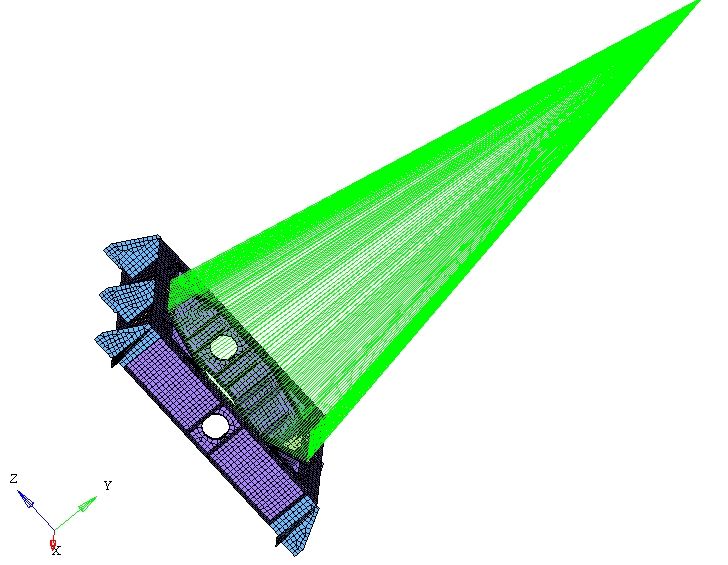
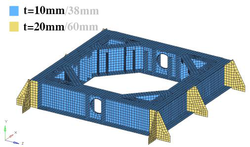
NEMOR Co. Ltd — Engineering Director & Partner (2016–2022)
Take 20+ hardware products from client concept sketches through prototyping to volume production — managing complex BOMs (40+ components per product), coordinating 20+ contract manufacturers across injection molding, PCBA, sheet metal, and final assembly, while meeting cost, quality, and delivery targets.
Ran end-to-end DFM reviews with CM tooling engineers (injection molding: PC, PP, ABS; PCBA; sheet metal). Authored build instructions and assembly SOPs for production technicians. Delivered 100+ finished product batches on schedule. Key products included CATFI and BISTRO smart pet feeders — complex electromechanical assemblies requiring precision mechanical-electronic integration and food-safe material compliance.
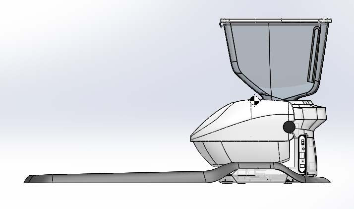
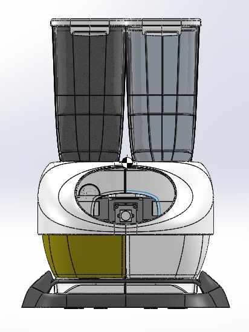
Full-scale industrial deployment and hardware troubleshooting
Scaling up the patented hydrodynamic filter design into a full-size industrial aeration system revealed unexpected flow imbalances and vibration issues when deployed in large-volume concrete tanks.
Conducted on-site troubleshooting and root cause analysis in operating aquaculture facilities. Adjusted submerged piping geometry, addressed vibration through structural dampening, and tuned pumping flow rates to achieve uniform aeration distribution.
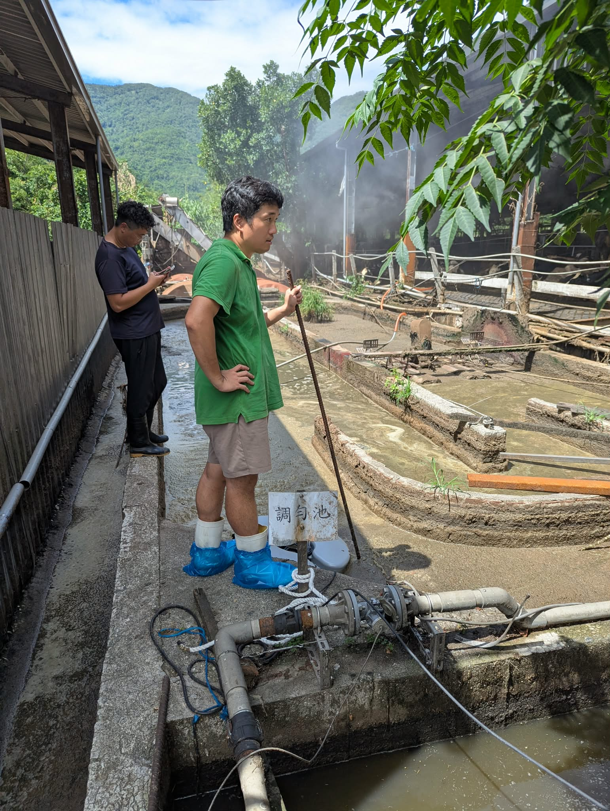
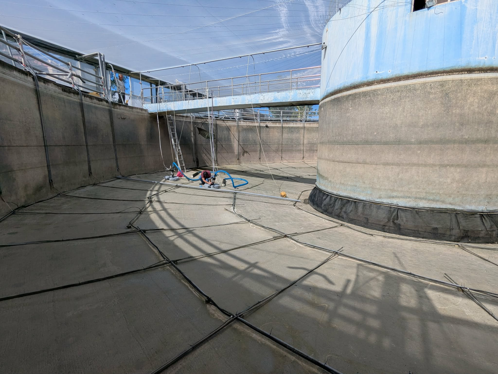
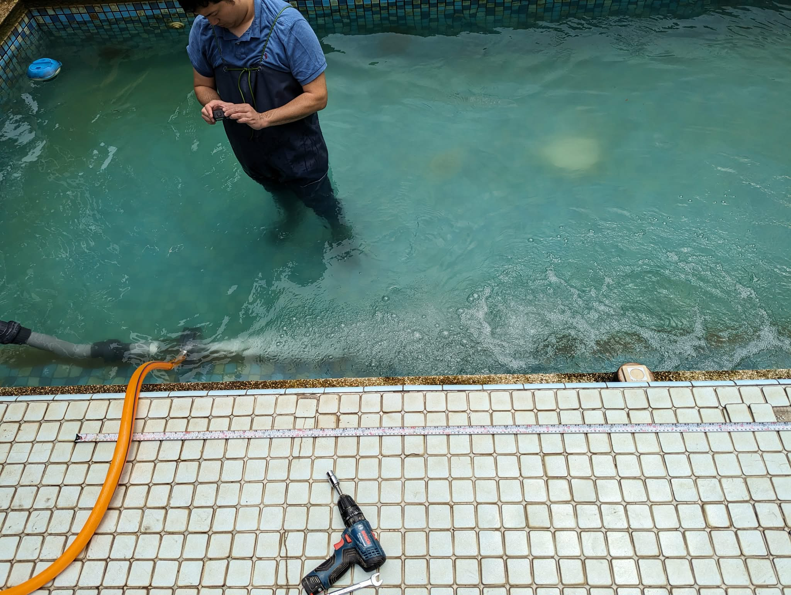
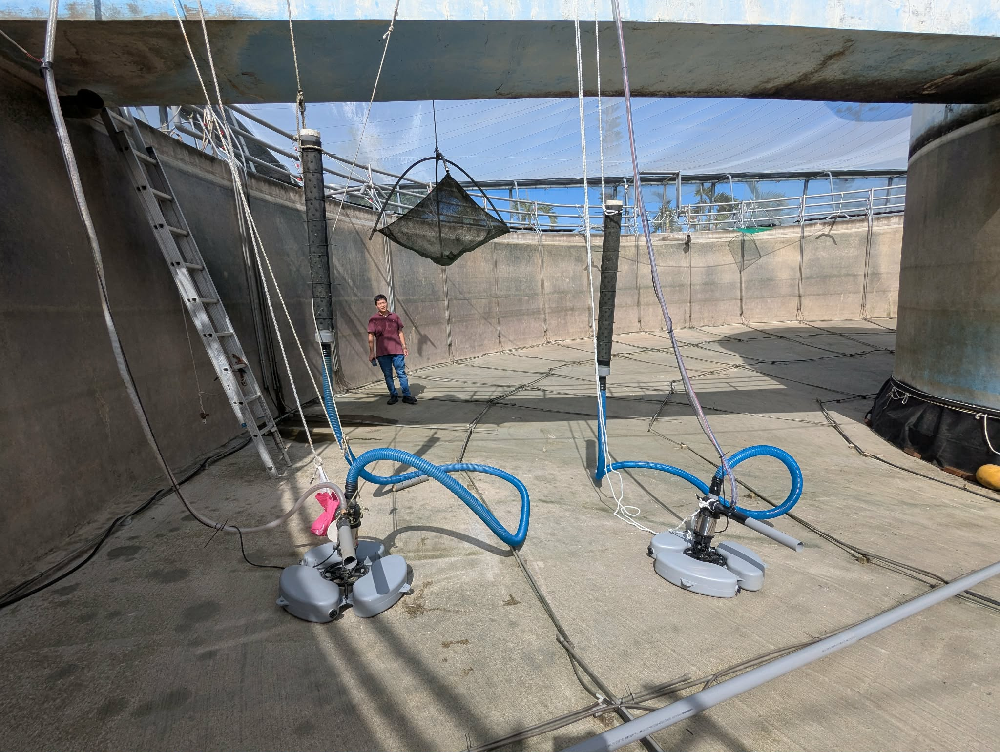
Master's Thesis — National Cheng Kung University, Dept. of Aeronautics & Astronautics (2013)
High-payload UAVs are prohibitively expensive to design from scratch. Converting a manned ultra-light aircraft (Quicksilver MX Sprint, ~136 kg payload) into an unmanned system requires replacing all pilot-operated control surfaces with remotely actuated mechanisms — while preserving airframe structural integrity and flight dynamics.
Designed and manufactured a complete hydraulic actuation system (motor, pump, manifold, LVDT-equipped cylinders) to drive all five control surfaces: rudder, elevator, aileron, throttle, and brake. Created custom gear-rack and slider mechanisms in SolidWorks, optimized mounting plates via topology-based weight reduction (40% material removal), and validated actuator response through LVDT position feedback testing at multiple stroke speeds.
Thesis: "Design and Verification for Unmanned Ultra-light Aircraft System", NCKU (2013).
Publication: "System Reengineering in Mechanism Design and Implementation for Unmanned Ultra-Light (Part I)", Journal of Aeronautics, Astronautics and Aviation, Vol. 46, No. 2, 2014.
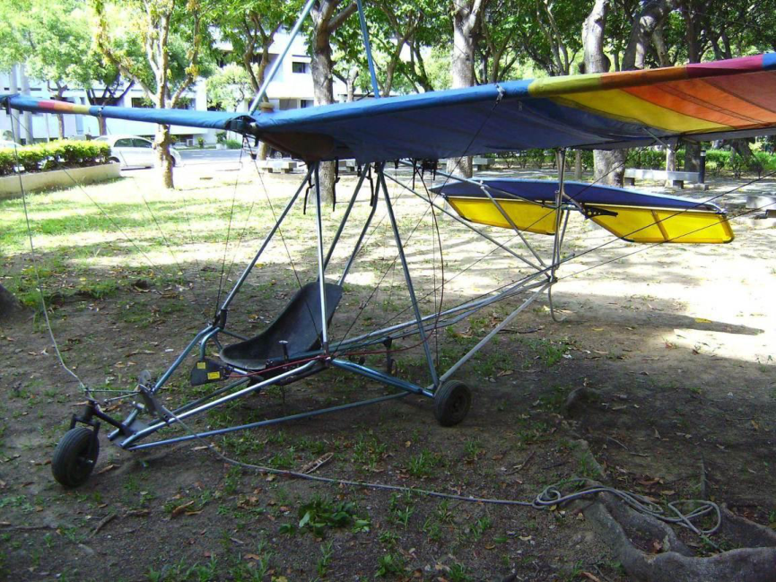
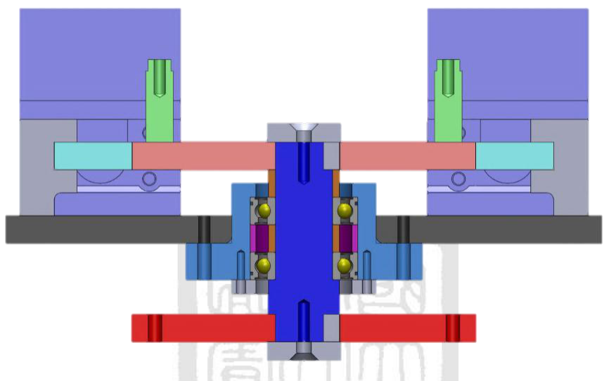
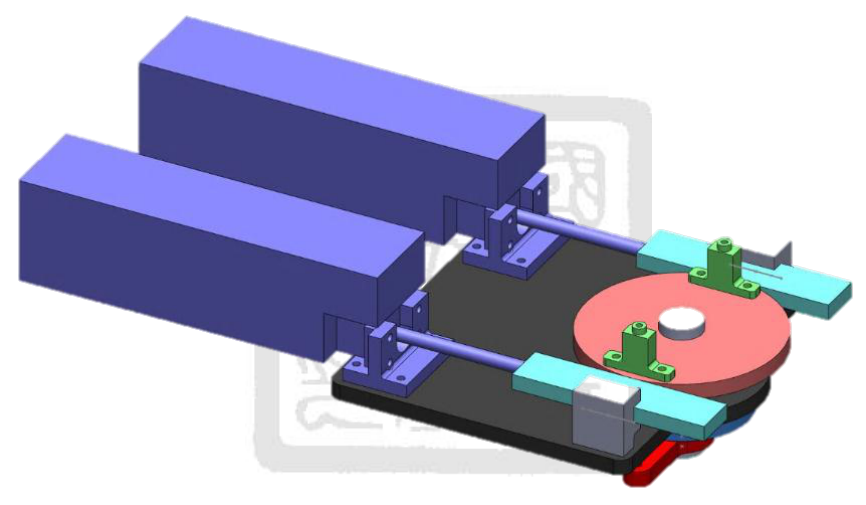
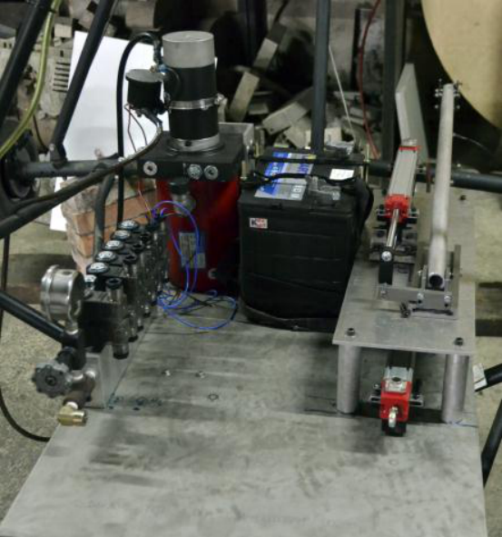